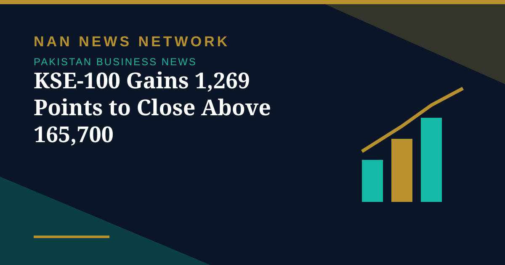

KSE-100 Gains 1,269 Points to Close Above 165,700

The benchmark KSE-100 Index of the Pakistan Stock Exchange continued its bullish momentum on Wednesday, gaining 1,269.55 points, a positive change of 0.77 percent, to close at 165,736.76 points against 164,467.20 points in the previous trading session. The index touched an intraday high of 166,100.34 points and a low of 164,355.83 points.
Breadth and volumes
The ready market witnessed trading volume of 578.124 million shares, up from 401.969 million in the previous session, while traded value increased to Rs26.203 billion from Rs18.069 billion. Market capitalisation rose to Rs18.329 trillion from Rs18.214 trillion. Of 496 companies traded, 269 posted gains, 180 suffered losses and 47 remained unchanged. Pervez Ahmed Co led the volume chart with 58.321 million shares, followed by TPL Properties with 38.349 million and Cnergyico PK with 34.763 million shares.
Among the top gainers, Ghandhara Industries surged Rs106.12 to close at Rs1,167.28, while Rafhan Maize advanced Rs70.86 to Rs8,408.05. On the losing side, PIA Holding Company LimitedB fell Rs448.49 to Rs13,551.50. The rupee also edged up, closing at 276.77 against the US dollar, a gain of Re0.03. The rally extended Tuesday's recovery, which Business Recorder attributed to easing international crude prices and broad-based buying despite the State Bank's recent 50-basis-point rate hike.
Sources: APP/UrduPoint, ARY News, Business Recorder, October 28, 2026
More on Pakistan Business News
- Fauji Fertilizer's Nine-Month Profit Hits Rs71 Billion on Strong Urea Demand
- KSE-100 Climbs 1,428 Points to Close at 164,467 in Bullish Session
- Pakistan Signs $2.25 Billion Deal for Lithium Battery Gigafactory in Rawalpindi
- Gold Prices Rise by Rs1,400 per Tola in Pakistan on Monday
- Business Confidence Falls to 48 in October, State Bank Survey Shows
- Diesel Raised to Rs393.66 a Litre, Petrol Unchanged at Rs377.71
- FBR Activates Faceless Tax Audit System From October 15
- Pakistan-Iran Trade Disruption Puts $2.8 Billion Annual Trade at Stake